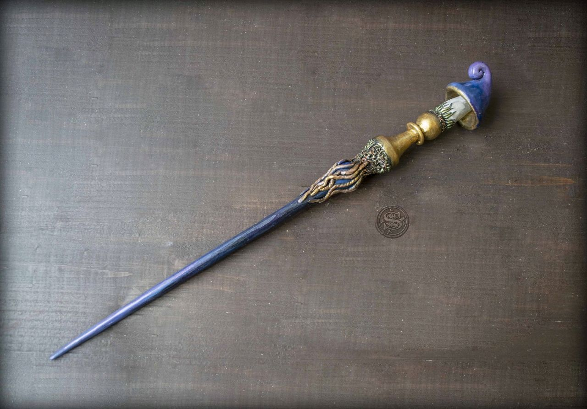
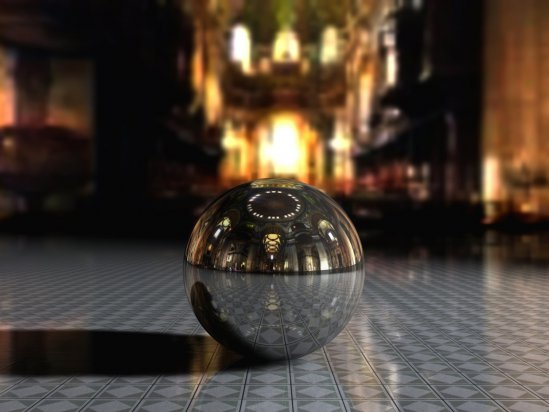
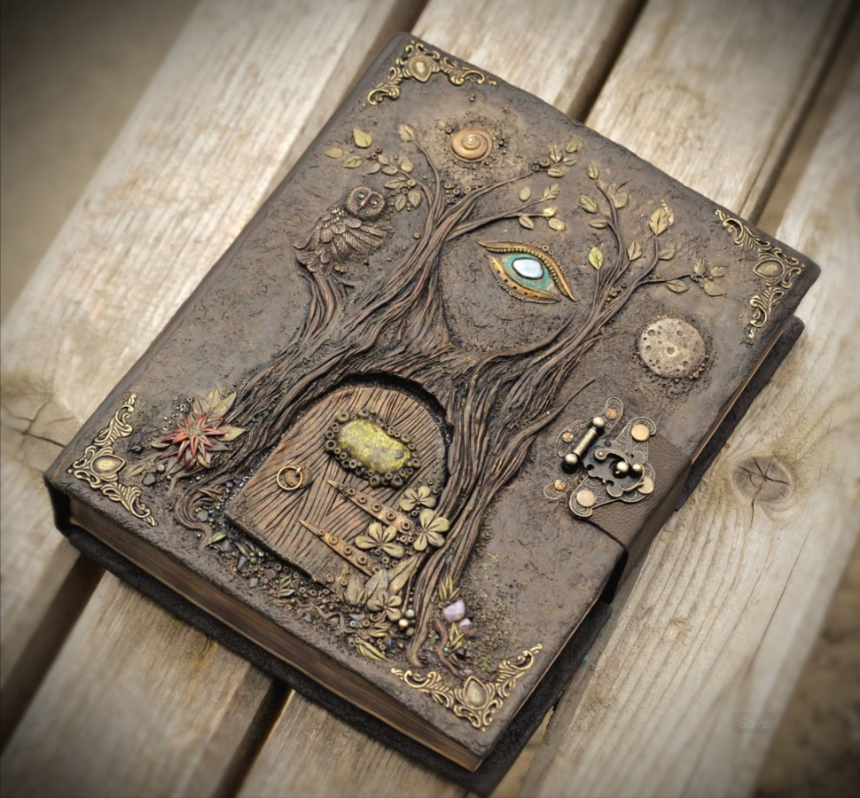
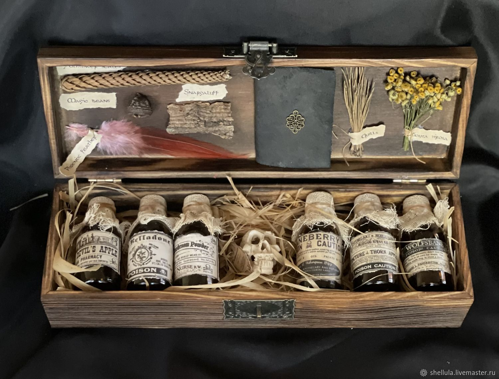
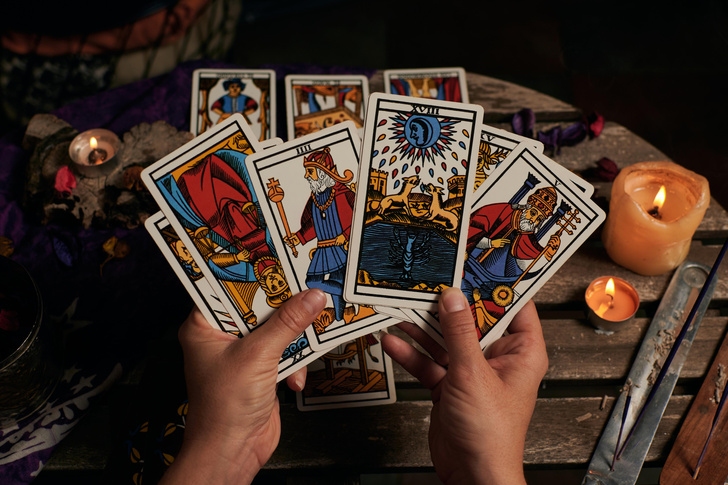
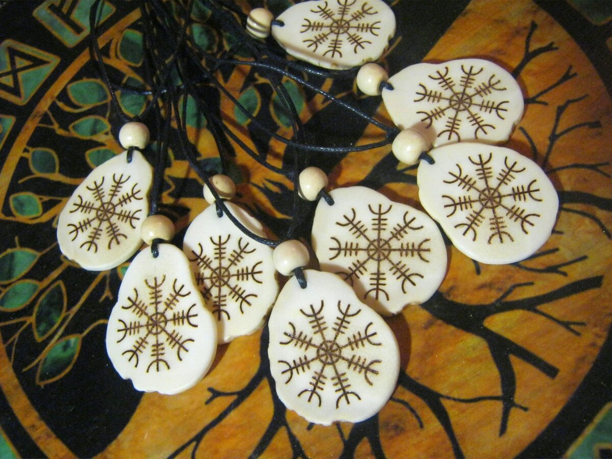
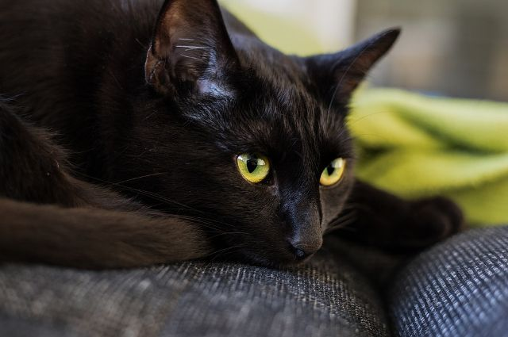

Последние поступления

Катерина: Эту палочку я нашла на чердаке дома, который недавно купила. Говорят, когда-то тут жила могущественная ведьма... Решила передать находку в музей, здесь ей будет гораздо лучше, чем на чердаке.

Алехандро: Этот хрустальный шар несколько лет был у меня в квартире простым элементом декора. Но в последнее время с ним начали происходить странные вещи: по ночам он светится и нагревается. Похоже, это все же волшебный предмет - решил отдать его специалистам.
 Нина: Купила этот котелок на барахолке, чтобы зажигать в нем благовония. Но он как будто искажает запахи, а внутри полно странных следов... Кажется, в нем варили зелья! Ему место в волшебном музее.
Нина: Купила этот котелок на барахолке, чтобы зажигать в нем благовония. Но он как будто искажает запахи, а внутри полно странных следов... Кажется, в нем варили зелья! Ему место в волшебном музее.

Агафья: В бабушкином наследстве нашла эту книгу заклинаний... У меня нет магических способностей, но уверена, что книга представляет музейную ценность.

Агафья: Это тоже наследство от бабушки. Многие ингредиенты упоминаются в книге, в готовку пускать их не решусь.

Маргарита: Эта колода несколько поколений передавалась в моей семье по женской линии. Когда-то я приняла ее с радостью, но теперь моя жизнь полностью перевернулась, и я решила оставить гадания и передать колоду в музей.

Аркадий: Я много путешествую по неизведанным уголкам мира. В одной из поездок загадочная женщина из странной лавки уговорила купить эти обереги. Я чувствую от них сильную энергию, с которой боюсь не справиться...

Аноним: Этот кот все время ходит рядом с моим домом, он очень подозрительный!
Комментарий сотрудников: Просьба не подбрасывать нам животных!! С предложениями по устройству кота писать на почту музея!